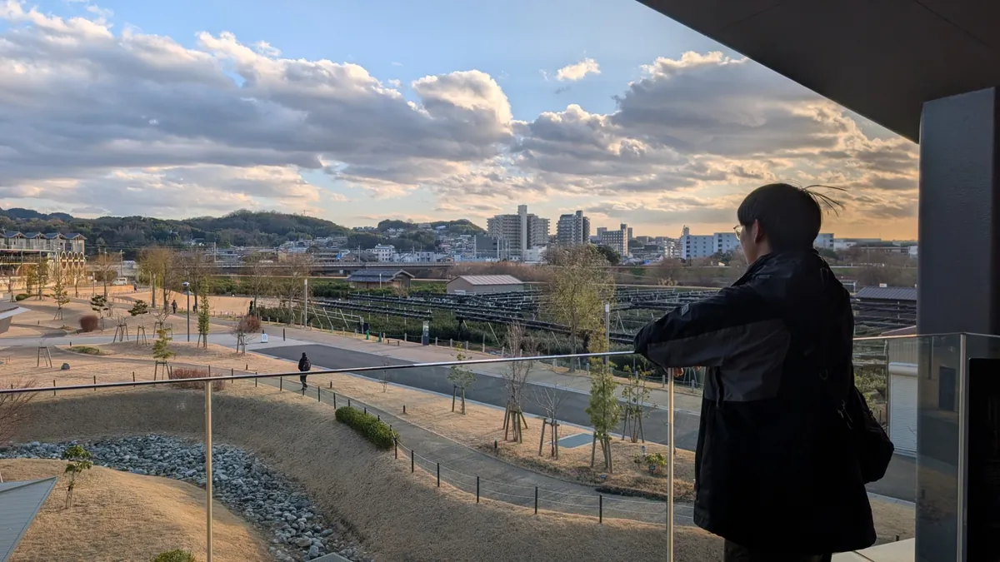

Cheyne Kueh 郭紹安
Photonics student at NYCU. I simulate perovskite solar cells, and teach a neural network to read their J–V curves, in Prof. Fang-Chung Chen's lab. 陽明交大光電系學生。在陳方中教授實驗室模擬鈣鈦礦太陽能電池，並訓練神經網路讀懂它們的 J–V 曲線。
President of the SPIE NYCU Student Chapter. Raised in Auckland; native English and 中文, with 日本語 at JLPT N3. SPIE 交大學生分會會長。在奧克蘭長大；英文與中文為母語，日文 JLPT N3。
Highlights重點摘要
- 5,000simulated devices顆模擬元件train the autoencoder that reads J–V curves訓練讀取 J–V 曲線的 autoencoder
- NT$1.04Mscholarship獎學金Top Overseas Chinese Student Scholarship, 2025頂尖僑生獎學金，2025
- 80+students taught位學生English and maths, Auckland, two years奧克蘭英文與數學，兩年
- 2native languages種母語English and 中文 at C2; 日本語 at JLPT N3英文、中文 C2；日文 JLPT N3
Recent近況
- Spring 20262026 春Presented Shockley–Queisser limits under simulated underwater spectra at the Chen lab meeting.於陳方中實驗室 meeting 報告水下模擬光譜的 Shockley–Queisser 極限。
- 2026Elected President of the SPIE NYCU Student Chapter.當選 SPIE 交大學生分會會長。
- 2026Started a digital twin of a perovskite cell, Special Project III.開始光電專題研究（三）：鈣鈦礦電池的數位分身。
- 2025Moved to NYCU Photonics on the Top Overseas Chinese Student Scholarship, and joined Prof. Chen's lab in the first semester.獲頂尖僑生獎學金轉入陽明交大光電系，大一上加入陳方中教授實驗室。
About關於我
I study Photonics Engineering at NYCU and have worked in Prof. Fang-Chung Chen's organic electronics lab since my first semester. My projects run from detailed-balance limits under underwater light to a digital twin of a perovskite solar cell: drift-diffusion simulation, then a neural network that reads device parameters back from a measured J–V curve.我就讀陽明交大光電工程學系，大一上起在陳方中教授的有機電子實驗室做研究。專題從水下光譜的細緻平衡極限，做到鈣鈦礦太陽能電池的數位分身：先做 drift-diffusion 模擬，再用神經網路從量測 J–V 曲線反推元件參數。
Outside the lab I lead the SPIE NYCU Student Chapter and serve as Welfare Minister in the Student Association. I grew up in Auckland, taught there for two years, and now tutor in Taiwan.實驗室之外，我是 SPIE 交大學生分會會長，也擔任學生會福利部部長。我在奧克蘭長大，在那裡教了兩年書，現在在台灣當家教。
Away from both, I read law (summer courses in civil and criminal law, and three courses at NYCU's Institute of Technology Law in fall 2026), swim, play badminton and ski, and hold a PADI Open Water Diver certificate. I played piano from age 4 to 15, then saxophone and taiko.其他時間，我讀法律（暑修民法總則與刑法總則，2026 秋季修讀科技法律研究所三門課）、游泳、打羽球、滑雪，並有 PADI Open Water 潛水證照。4 至 15 歲學鋼琴，之後學薩克斯風與太鼓。
Research, project by project逐一看研究專題 Leadership and teaching領導與教學
Education學歷
-
2025–
BSc Photonics Engineering, National Yang Ming Chiao Tung University國立陽明交通大學 光電工程學系
GPA 3.72 / 4.30 (first year, including summer session). Top Overseas Chinese Student Scholarship. Technology-law module and IMBA credit programme alongside the degree.GPA 3.72 / 4.30（大一，含暑修）。獲頂尖僑生獎學金。同時修讀科技法律跨域學程與 IMBA 學分學程。
-
2025/03–2025/07
Engineering, University of Auckland奧克蘭大學 工程學院
One semester, then transferred to NYCU on the scholarship above.就讀一學期後，獲上述獎學金轉回陽明交大。
-
2019–2024
Cambridge IGCSE and A-Level, ACG Sunderland, Auckland劍橋 IGCSE 與 A-Level，ACG Sunderland（奧克蘭）
330 UCAS points; early offer into Engineering (Honours) at the University of Auckland.UCAS 330 分；提前獲奧克蘭大學工程（榮譽）學位錄取。
Awards and scholarships獎項與獎學金
-
2025
Top Overseas Chinese Student Scholarship, NYCU (NT$1.04M)頂尖僑生獎學金，陽明交大（新台幣 104 萬元）
-
2018
NZ Chemistry Olympiad, silver certificate紐西蘭化學奧林匹亞，銀牌證書
Skills and languages技能與語言
Skills技能
- Simulation & analysis模擬與分析
- OghmaNano (drift-diffusion), MATLAB, LTspice
- Programming程式
- Python, C++, Java, R, SQL, JavaScript, HTML/CSS
- AI & cloudAI 與雲端
- Google Cloud Skills Boost, 8 badges: Vertex AI, Gemini API, BigQuery ML, multimodal RAG and othersGoogle Cloud Skills Boost 8 個徽章：Vertex AI、Gemini API、BigQuery ML、Multimodal RAG 等
- Visual & media視覺與媒體
- Blender, Unreal Engine, Adobe Premiere, After Effects, Photoshop, Illustrator, Lightroom, Audition
- Interpretation口譯
- Live English–Chinese interpretation and translation中英即時口譯與翻譯
Languages語言
- C2English
- Native. TOEIC 960; BESTEP Elite Award, 2nd prize.母語。多益 960；BESTEP 菁英二獎。
- C2中文
- Native, Traditional Chinese.母語，繁體中文。
- N3日本語
- JLPT N3, working towards N2 for an exchange in Japan.JLPT N3，為赴日交換準備 N2。
Contact聯絡
For research, internships or SPIE chapter matters, email is fastest. The CV is a two-page PDF.研究、實習或 SPIE 分會的事，寄信最快。履歷為兩頁 PDF。
Currently: undergraduate research in Prof. Chen's lab, and open to conversations about photonics research.目前：在陳方中教授實驗室做大學部研究，歡迎聊光電相關研究。